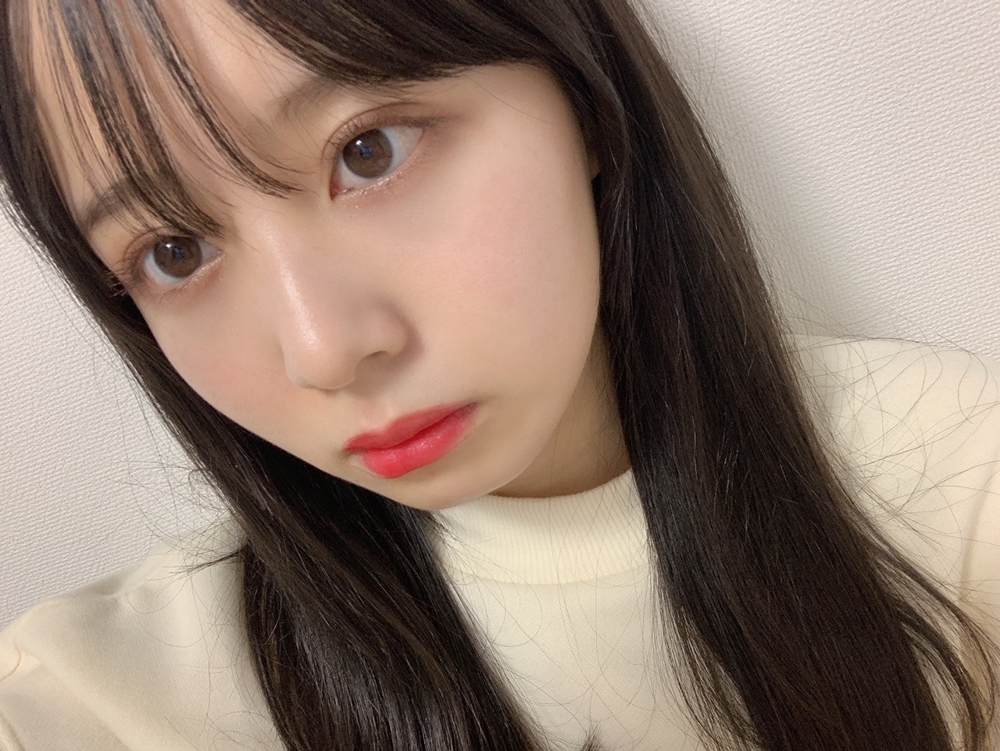
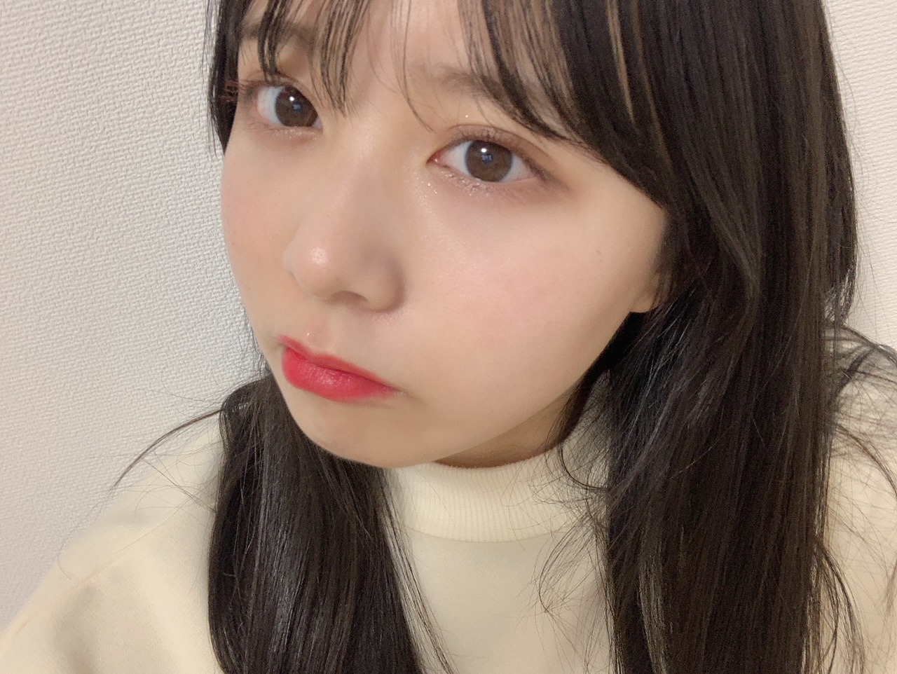
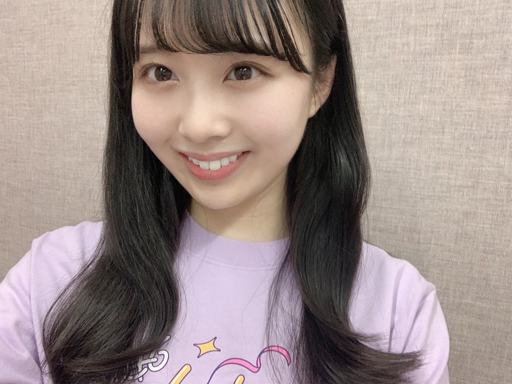
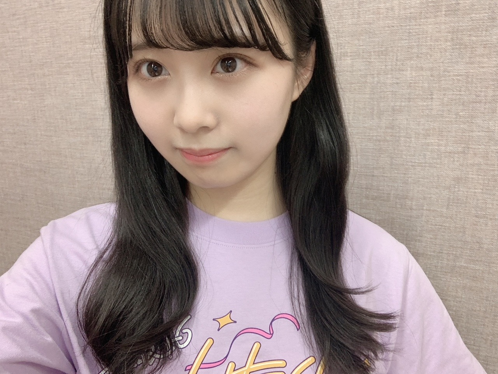

2020/1204Friマフラーを巻いた少女が。佐藤璃果
こんにちは
乃木坂46 (新)4期生 岩手県出身
佐藤璃果です。


お元気ですか？？
最近購入したリップが赤すぎてびっくり
しました。あまり買わない色味だったので、
お仕事じゃない時に使っていきたいです。
心が爆発しないように、
胸に貯めた想いを無駄にしないように
前に進みたい。
すれ違う人は案外優しいかもしれない
目に見える全てのものが
本当じゃないって分かってる。
でも、信じたいってどこかで思っている。
信じたい。
~~~~~~~~~~~~~~~~~
｢僕は僕を好きになる｣
オンラインミート＆グリート（個別トーク会）の開催が発表されました！！
【日程】
（１）1月31日（日）
（２）2月7日（日）
（３）2月14日（日）
（４）2月27日（土）
（５）3月14日（日）
（６）3月21日（日）
第2次受付
2020年12月10日（木）14:00 ～ 2020年12月11日（金）14:00 まで
https://www.nogizaka46.com/smph/news/2020/12/-4626th.php
みたいです！
直接会えなくて寂しいのは
もちろんそうですが、
オンラインでも会いに来てくれ無かったら
もっと寂しいので、
気軽に応募して下さったら嬉しいです︎︎☺︎
皆さんとお話出来る日をずっとずっとずっと
待っていました。
今まだ皆さんに伝えきれていない
感謝の気持ちを伝えたり、
心の距離感を縮められたら
いいなと思っています( ˙ᵕ˙ )
私はずっと地方住みで、
都会の握手会やライブにすごい憧れを
持っていたからそういう地方の方も参加しやすい素敵なイベントだなと
思っております！
待ってるね。
ドキドキ。
~~~~~~~~~~~~~~~~~

1枚目笑ってるけど、ロゴが入っていない

2枚目ロゴが入っていないと思い、
少し引きで撮ってみる。
結局写っていない。
皆さん、グッズお揃いにしましょうねー！
のぎおび、
ゆりちゃんとでした！
ありがとうございました。
のぎおび選手権悔しい( ˙ᵕ˙ )
でもゆりちゃんと
テレパシーで繋がれたから良かった( ˙ᵕ˙ )
雨の湿気に弱いんですよ、、
歩いて来たら湿気に負けてた( ˙ᵕ˙ )
~~~~~~~~~~~~~~~~~
｢レコメン！｣さんに出演させて頂きます！
❁レコメン！乃木坂四期生メガ盛り祭り❁
12月7日（月）：掛橋、黒見、璃果
12月8日（火）：筒井、林、矢久保
12月9日（水）：柴田、清宮、松尾
のメンバーです！
私は初日ですね！
楽しみにしましょうー！
~~~~~~~~~~~~~~~~~
最近質問に答えられなくてごめんなさい。
ライブが終わったら沢山答えますね！
次にブログを更新する日には
ライブが終わってるんですね。
色んなことが起こる日だともう予感しています。それでも最後までやり遂げて、
素敵な一日にしたいです。
ライブ終わったらもっと
皆が好きになってくれていたら嬉しいな。
~~~~~~~~~~~~~~~~~
11月30日、伊藤純奈さん
❁お誕生日おめでとうございます❁
純奈さんの響く歌声がとても素敵だなと
心の底から何度も思いました。
沢山の方から愛されている
綺麗なお姉様という印象です！
優しそうな方だなぁとずっと
おもっていました！
素敵な一年になりますように。
~~~~~~~~~~~~~~~~~~~
明日はるなぴです。
林のリハ着すき！
~~~~~~~~~~~~~~~~~~
皆さんにとって
素敵な1日になりますように。
またね。
#45 りか
それでは！！ばいっ！！
コメント(318)
寒い。とにかく寒い。
体も心も温かく！！
んじゃ、またね！！！！
4期生ライブが成功しますように！
のぎおびみたよー ゆりりかサイコーです あの時間すっごいふわふわしてて、ゆったりとしたいい時間でした
二人の空気感好きだな～ 選手権早かったね！ あと少しだったけど、いい引きだったよ！
ライブtシャツ似合ってたよ！ブログであげてくれてありがとー 紫カラーでイラストがかわいいね
赤いリップも似合ってるねー りかちゃん、肌が白いから赤が引き立つね！
昨日ののぎおびでアフター配信で歌う曲が発表されたね
個人的には、きっかけと四期のあらロマがいいなー
楽しみに待ってるね！
次のときにはライブおわってるね 僕もめっちゃ楽しむからりかちゃんもライブ楽しんでね！
リップの色すごい似合ってると思う！自分はかなり好き！！
レコメンがんばってね！！絶対聞く！
質問再開とのことで、、
○おすすめの小説ありますか？？
○バスケやったことありますか？？
答えてくれたら嬉しいな！
これからも頑張ってね！
リップ、確かに。少しレトロっぽい。
お元気ですかって、僕ら世代だと、井上
陽水さん以来。わからないでしょ。
新４期生にとって、ファンと１対１で対
面するイベントは初めてですね。どう、
ドキドキする？
ってドキドキって書いてるね。
ライブＴ、いい色ですね。初々しさを表
すような薄紫。藤色かな。
ライブ、いよいよですね。
視聴環境チェックして万全の体制で臨み
ます。
最初の1.2枚の写真の璃果ちゃん
とっても大人っぽくて可愛い(⑉• •⑉)♡
赤すぎる璃果ちゃんも似合ってて良き！♡
その写真のアイシャドウの色味が
とっても好きなんだけど
どこのかすごく気になる！
あと璃果ちゃん涙袋に
アイシャドウ塗るの上手くない？！！
自然な感じで色付いててすごい(๑°ㅁ°๑)‼
メイクするの上手な人って本当憧れるなぁ
どうやって勉強したの~？？？( ˙꒳˙ )
┈┈┈┈┈┈┈ ❁ ❁ ❁ ┈┈┈┈┈┈┈┈
ミーグリ始まるね！
璃果ちゃんに応募したいんだけど
親がいるからお家でミーグリするの
恥ずかしいんだよね…( ˊᵕˋ ;)
でも来年度から一人暮らしする予定だから
次の27thシングルからなら
ミーグリ参加できると思う！！！
いつになるかわからないけど
いつか必ず絶対に璃果ちゃんに会いに行くね！
でもまずはやっぱ璃果ちゃんが
やっと握手会に参加できたことが嬉しいな☺︎
こんなしょうもない理由で
ミーグリに参加しないことに
璃果ちゃんおこだと思うけど
本当ごめんね( •̥ ˍ •̥ )
でも璃果ちゃんが好きなことに
変わりはない！絶対！！！
もちろん会いたかったけど
直接会いたかったな( ；꒳； )
さっきも言ったけど
いつか必ず絶対本当に会いに行くから！！
待ってて( ᵒ̴̶̷᷄꒳ᵒ̴̶̷᷅ )
┈┈┈┈┈┈┈ ❁ ❁ ❁ ┈┈┈┈┈┈┈┈
ミーグリに参加しない代わりに
4期生ライブは観るよ~！！！！
璃果ちゃんが輝いているところを
見れるのがとっても楽しみ！！♡
どんなパフォーマンスするのか
どんな曲歌うのか
どんな衣装を着るのか
璃果ちゃんのセンター曲はあるのか！
今からワクワクしてる~！！⸜(* ॑꒳ ॑* )⸝
リハーサル大変だと思うけど
無理せず頑張ってね。
ライブの感想待ってます(*´˘`*)♡
┈┈┈┈┈┈┈ ❁ ❁ ❁ ┈┈┈┈┈┈┈┈
【質問】
・今年ももうあと1ヶ月きったけど、今年を漢字1字で表すと？？
・ちょっと早いけど来年の抱負あったら教えて~！！
・もうすぐクリスマスだね！サンタさんは何歳まで信じてた？？
4期生ライブ楽しみにしてるね~！❤︎
次のブログ更新待ってるね(*ˊˋ*)
*⑅୨୧まなみん୨୧⑅*
ブログお待ちしてました〜〜♡♡
リップ赤過ぎるなんて事ないよー( *´﹀`* )
可愛い( *´﹀`* )
#のぎおび
観ましたよ〜ん
悠理ちゃんとの空気感、癒されました( *´﹀`* )
2人ともお淑やかにお話しするから！
宗muneは、あらかじめイヤホンを準備しまして、
じーーっくりと聴きました( *´﹀`* )( *´﹀`* )
グッズ発表でしたね〜
楽しみです( *´﹀`* )
ライブももちろん観ますから！！
そして！
宗muneはミーグリ！！璃果ちゃんの取れました！！
ウキウキ( *´﹀`* )
ちょっと緊張〜( *´﹀`* )
お話しできるの楽しみだな〜( *´﹀`* )( *´﹀`* )
まずは、ライブの成功を祈っております＼＼\\٩( 'ω' )و //／／
では今日はこの辺で
おしずがに〜( *´﹀`* )( *´﹀`* )
今回のミーグリに応募したら当たって、お話できることになってん笑
実際お話したらどんな感じなんかなって楽しみにしてんねん！！
そのときはよろしく〜
ホエルコ
雰囲気の違う写真ですね！
いろんな璃果ちゃんが見れて
嬉しいですよ！
遅いかもしれませんが、
アップトゥボーイみました！！
めちゃくちゃかわいかったです！
あの服めちゃくちゃいいと思いました！
雑誌に毎月ぐらい出ていてすごいです！
ミーグリ申し込めるかわからないですが、
お話ししたいなぁ笑
のぎおびみました！
Tシャツで寒くない？ってコメント多くて
おもしろかったです。
選手権はすごくはやかったです！
同い年で仲良い所も見れて
すごくよかったです！
レコメン！楽しみです！
褒める企画？ということで
璃果ちゃんの得意企画だと思うので
頑張ってくださいね！
久保ちゃんとの共演のスキットも
あるみたいで楽しみです。
またね！
4期生ライブまであと2日〜！！楽しみにしてるね！！
ミーグリも当たったよ！全日程会われへんけど（ ; ; ）
午前の部で会いにいくね〜♪
てか4期生ライブのシャツめっちゃ可愛いなぁ！！
でも淡い色やから私が着ると汗が目立つ…笑
ライブ楽しんでな♪
ライブで興奮する瞬間あったら、教えて♡
楽しみにしてるね〜！！
4期生ライブ楽しみだよー！
ステージで頑張る璃果ちゃんの姿を目に焼き付けるから！
めいっぱい楽しんでね！
ミーグリも璃果ちゃんの当たったよー！
お話できるの楽しみやわ
質問
ミーグリでどんな話すると嬉しいですか？
今度の４期生ライブ観るよ。
頑張ってね。
めっちゃ赤いリップやね！！
似合ってるよ¨̮ どこのリップなんですのん〜。
いつもと違った色のリップめちゃくちゃ似合ってて素敵ですね
前髪がシースルーな感じなのも超可愛いです。
ミーグリ当たりましたよ〜！！
1月31日、2月14日、3月14日、21日取れました！
待ちに待ったミーグリなので楽しみで仕方ないです！
お金が無くて6枚しか取れなかったけど、できる限りたくさんの感謝を璃果ちゃんに伝えたいなと思います。
-----------------------------
のぎおびもお疲れ様でした！
璃果ちゃんと悠理ちゃんは2人ともふわふわしてる印象があるので、すごく癒される配信でした
グッズの紹介から璃果ちゃんがずっと半袖だったので、寒くないかな？冷えちゃわないかな？って心配してました。笑
とってもとっても可愛かったです...！！
レコメンも絶対聴きますね〜！！！
-----------------------------
4期生ライブいよいよですね！
実際に璃果ちゃんと会うことができないのはやっぱり寂しいけれど、お家からたくさん応援します！推しメンタオルも持っておきますね！！
璃果ちゃんがどんな曲を披露するのか楽しみで仕方ないです
(瑠奈ちゃんのソロもめっちゃ気になります...！)
-----------------------------
質問です↓
・3期生の中で最近お話した方はいますか？
・ミーグリで釣ってもらうことってできますか？
・4期生ライブの期間で新たに発見した事は何かありましたか？
・最近の瑠璃はどんな感じですか？
ぜひ聞かせてください！
-----------------------------
璃果ちゃんとお話できる日が本当に待ち遠しいです。
いつも璃果ちゃんにたくさんの元気と幸せをもらっていることへの感謝や、大好きという気持ちを直接伝えられるのが嬉しくて嬉しくて。
｢どんなことお話しよう｣って考える時間も超幸せなんですよ〜！！
はやく1月31日にならんかな～ってそわそわしてます。笑
4期生ライブと次回のブログ楽しみに待ってます！
大好きです〜！！！
あきひろ
赤色リップかわいい！
ちょっと大人な感じになるね。
大人なりかちゃんも好きです。
のぎおびお疲れ様！！
ゆりちゃんとのふわふわコンビめっちゃ良かった！
見てて癒されました。
2人でお散歩行けたらいいね！！
めっちゃ楽しそう笑
ついにグッズも発表！
りかちゃんの着てた、ライブTシャツかわいい！
ロゴがいいですね。
早速買わせてもらいました。
届くの楽しみ。
ついに明後日になったね。
16人で力合わせて頑張って！！
画面の前で盛り上げる！
ではでは体調には気をつけて。
次のブログも待ってます。
いつもありがとう。
ミーグリの時に使ってください！見たいですー
4期生ライブ、ミーグリ、楽しみがいっぱいあって幸せです
りかちゃんやっとミーグリだね〜！1月31日の1部無事とれました〜！ほんとに嬉しくて叫んだよ〜！話したいこと沢山あってどれから言おう、、とか考えてる時間がめっちゃ幸せです⸝⸝- ̫ -⸝⸝1番に言いたいことはもう決めてるから早く伝えたい
いつもより濃いリップもめっちゃ似合ってるね可愛い〜！
質問です！この冬新しく買ったマフラーとか冬服はありますか？りかちゃん×マフラー全部可愛いから自撮り撮って欲しい
最後になったけどほんとにミーグリ楽しみにしてます！ 今日も更新ありがとうございました
私は若い頃から、内にこもるタイプなので、自分について考える事が多くて、自分がどんな人間なのか良く分からないと言った事が無くて、自分を嫌いになる事もあまりありませんでした。ただ私は体が弱く、運動が苦手で、劣等感はありました。喧嘩で負けて泣かされる事もたくさんありました。でも不思議と自力で立ち直れましたね。26thも若い皆さんを励ます歌になると良いですね。
ではまた。
今日もライブの準備で忙しい中ブログ更新ありがとう！
今日も今日とて可愛いね〜！
リップめっちゃ赤いなって思ってブログ開いたら、やっぱりいつもと違うリップなんや！！
のぎおび見ました！
北川悠理ちゃんとほのぼのした配信で見てて癒されました。
クイズにすぐ正解したのすごかったね。
あと、怒ったときがめちゃくちゃ可愛いかったです。
ミーグリ申し込みました！
80枚ひとまず当たったので、いっぱい話せるの楽しみにしてます。
それではお身体に気をつけてライブ頑張ってください！応援してます。
コメント、失礼します！
ブログ更新、ありがとう！
赤いリップの璃果ちゃんも可愛い。
似合ってます。
ミーグリ、確保しました！
1/31と2/14の第4部に2枚ずつです。
ミーグリをまだ経験したことがないので、どうなるか分からないけど、ようやく璃果ちゃんとお話出来ると思うとめちゃくちゃ楽しみです。
どんな話をしようかなー。
釣ってもらっても良いですかね笑笑
のぎおび、お疲れ様でしたー。
誕生日もしかしたら同日かもコンビの配信は、良い空気感だったよ。
選手権で勝てなかったのは残念だけど、テレパシーで繋がれて良かったね。
そして、いよいよ4期生ライブも近付いてるということで、是非楽しんで下さい。
しっかりと観させて頂きます。
それでは、この辺で。
おやすりかちゃんー
45回目のブログの更新ありがとうございます！
リップが濃い璃果ちゃんもお美しくて癒されます(*´`)♡
┈┈┈┈┈┈┈┈┈┈
ミーグリの抽選結果が出たのですが…
なんと！全日程璃果ちゃんとお話出来ることになりました(๑´ω`ﾉﾉﾞﾊﾟﾁﾊﾟﾁ わーい！！！
ステイホームで出来るので予定次第では全日程申し込むことが出来るのもミーグリならではの良さですね♪
画面越しではありますが、沢山の感謝の気持ちを伝えられたらいいなと思っています…！
よろしくお願い致します♡
┈┈┈┈┈┈┈┈┈┈
悠理ちゃんとののぎおび配信お疲れ様でした(´ω｀)
ゆるく巻いた髪型がとっても似合っていて可愛かったです♡
髪を耳に掛けているのも個人的にどストライクでした( ᵒ̴̶̷᷄ωᵒ̴̶̷᷅ )و ̑̑
のぎおび選手権、本当に璃果ちゃんナイスでしたね！
1位になれそうな勢いでした
┈┈┈┈┈┈┈┈┈┈
レコメンも必ず聴きますね！
璃果ちゃん・さぁちゃん・くろみんの三人でどんな化学反応が起こるのか、楽しみです︎☺︎
┈┈┈┈┈┈┈┈┈┈
遂に明後日は4期生ライブですね！
サイリウムを振って沢山応援します٩( 'ω' )و
アフターパジャマトークも凄く楽しみです( ◜▿◝ )
それではまたね(๑ ˙˘˙)/
璃果ちゃんにとって素敵な毎日になることを願っています✧‧˚
赤のリップ大人って感じでめっちゃいいと思う！今日もかわいい写真をありがとう！ミーグリとかレコメンとか4期生ライブとかで璃果ちゃんを見れる機会も増えるしほんまに嬉しいなって思う！4期生ライブ頑張って〜！
質問
回転寿司行ったら何皿くらい食べる？
今年ももう終わるけどどんな1年だった？
ライブで起こったハプニングあった？
赤いリップ、大人っぽく見えて素敵です。
ミーグリ申し込んだんで、お話し出来るの楽しみにしてますね！
４期生ライブも楽しみです！
りかちゃんのパフォーマンス、目で追っかけますね！
次のブログも楽しみにしてますね！
ライブの感想聞けたらいいな！
夜、テレビをつけたまま寝ちゃうことはありますか？
レコメンとかライブとかミート＆グリートとか色々目白押しで楽しみです！ちなみに僕は元気です！璃果ちゃんもお体に気をつけて頑張ってください！また待ってます！ばいっ！
質問！
璃果ちゃんが考える瑠璃色の果実ってなに？
徐々に最近は寒くなって「THE・冬」って感じになりつつあるけど、りかちゃんは明後日本番を迎える「４期ちゃんLIVE」に向けてバッタバタな日を過ごしてるかと思うけど、僕は当日のLIVEを、見る事は叶いそうにないから今年６月にやってくれた「４６時間ＴＶ」の最終日のＬＩＶＥ込みで「４６時間ＴＶそのものを」(笑)、その４期ちゃんＬＩＶＥ代わりに、見ながら過ごしてるね( *´艸｀)
そして、りかちゃん達も本当に待ち望んでいた「２６ｔｈからの握手会に変わるミーグリ」このシングルから本格参加するって書いてあったから僕も「安堵」してたよ。思いっきり楽しんで、今までの分の感謝を伝えて楽しいひと時にしてね☆彡
ってか、今日の写真。前半は「めっちゃなんか大人っぽく」感じたよ。リップの色１つで変わるんだなぁ～って、改めて思った。後半はいつものりかちゃん(●´ω｀●)って感じがして、見慣れてる感があったよ。
僕も「神奈川住み」だけど、「僕が行ける会場が限られている」から、なんかりかちゃんと似てるなぁ～って思いながらブログを読んでた。握手会１つにしても、片道２時間くらいかかるし。握手会がある度に行けるような「体」じゃないし、その間に「僕が推してたメンツ」は卒業してったり、卒業前にひと言言いたくても言えない事も沢山あったから、握手はできないものの、各地から推しメン達を見れる「ミーグリ」は、ある意味最高の手段の１つなのかもしれないね。
そしてそして！のぎおびも先週から２週にわたり「４期ちゃん１６人」が独占してたなぁ～？(￣ー￣)ﾆﾔﾘ
僕は、誰一人としてリアルタイムで見る事が叶わなかったぞぉ～(;O;)
だから、全員分・・・・・・「録画しちゃった」(笑)( *´艸｀)
「(。´・ω・)ん?それって、どっちみち見れるやん！」ってノリツッコミしないの(笑)( *´艸｀)
ってか、去年まで２人とか当たり前にできてた「のぎおび配信」も今年から急に厳しくなり、やっと最近出来始めたから、なんか懐かしい感じがしてたよ。
（僕は、SHOWROOMそのものを乃木メンがやるって決まった、最初の時（約３年前位）から、見てたし、「のぎおび配信」になってからも時間が合えばたまぁ～に見れてたんだぞぉ～ヽ(^o^)丿）
それじゃあ、りかちゃんもLIVE近いけど、体調管理にだけは気を付けながら、元気にLIVEを乗り越えて楽しさの余韻に浸りながらまた、５日後に会おうね☆彡
明日も一日！一緒にお家時間を楽しもうね♪大好きだよ♪リカロットお嬢様ぁ～ヽ(^o^)丿
出会い方次第で状況は変わってしまうかもしれませんが。
ちょっとしたタイミングで分かり合えないのは、哀しいことです。
リップの色にあってるよメチャメチャ大人っぽくていいよ！
ミーグリは当たったから今からしゃべること考えてとてもそわそわしてる。初めてしゃべるから何話そうかめっちゃ迷ってる
4期生ライブの練習とかいろいろあるけど体調とか怪我はしないようにね！頑張ってください！！
質問です！
・今一番したいお仕事は何ですか？ちなみに僕はモデルとしてかっこいい璃果ちゃんがみてみたいです！
・4期生ライブを通して仲良くなったメンバーはいますか？そのメンバーとどんな話をするのかも聞きたいです！
・璃果ちゃんの愛が止まりません。どうすればいいですか？
以上です。返事を下さい!!
またね！「た」でした。
リップ似合っててすごく可愛いです(*^^*)
ブログ更新ありがとうございます！
先日のSHOWROOM見ました！
北川ちゃんとのほんわか配信めちゃくちゃ良かったです。
いよいよ4期生ライブですね。のぎおびでたくさんの情報が発表されて楽しみな気持ちがどんどん膨らんでます。ユニットパフォーマンスもどんな感じになるのかワクワクしてます。
オンラインミート＆グリートも楽しみです。
りかちゃんにとっては初めての特典イベントになるので、オンラインではありますが絶対に会いに行きますね！！
ライブに向けての追い込みなどもあるだろうし、大変な時期だとは思いますが、お身体に気をつけてください。
次回はライブのあとの更新になるので、感想や裏話、楽屋写真など。楽しみにしています。
ではでは～！！！！
それぞれのユニットが特に楽しみです！！璃果ちゃんのパフォーマンスも今回初めて長く本格的に観れるからめっちゃ注目して観ちゃうかも！笑
毎日、4期生ライブの事考えてるからか昨日、自分が4期生ライブを会場で観てる夢見たよー
アフタートークの2曲も含めて全部全部本当に楽しみにしてます！璃果ちゃんのことずっと応援して観るね！！
ミーグリも応募した〜！1/31の1部、2部、それから2/14の1部、2部の4つ応募したよ！ 握手会のように直接会って話すことはできないけど、やっと初めて璃果ちゃんと話せるチャンスだから、緊張もするけど、伝えたいこと伝えられるといいな( ´-` ).｡oO
今までずっとこのブログコメントだけが唯一、璃果ちゃんとの懸け橋だったから、画面越しだけど直接話せる場が作られることが本当に嬉しいし、楽しみです！！！
〜質問〜
○さつま芋大好きな璃果ちゃんですが、さつま芋以外で普段から持ち歩いている食べ物はありますか？
○最近、何か新しい料理に挑戦したりした？
○璃果ちゃんが夢に出てくるくらい大好きなんだけど、嫌じゃないですか？( ´-` ).｡oO
1月31日が今から楽しみです‼️初めて話すからどんなこと聞けばいいか分からないから、もしこのコメントを見ていてくれたら答えてほしいな。お願いします‼️数で言えば3枚分だから二次以降もまだあったら応募してみるね‼️
じゃあライブ頑張ってください‼️
リハーサルお疲れさま☺︎
今までたくさん質問を答えてきてくれてて、それだけでもありがたいから、りかちゃんのペースで大丈夫です！
ミーグリたくさん当たったよ♩♩
1/31.2/14.2/27.3/21
に会える〜〜
ありがとうをめいっぱい伝えられるといいな。
質問
◯ミーグリで前のブログにあげてた水色の服を着てくれたら嬉しいです！
◯4期生ライブで1番印象に残った曲は何ですか？
岩手のおとなり宮城から応援してます☺︎
れな
今日は璃果ちゃんに応募していたミーグリの当落みました。結果は全落でした。璃果ちゃんが人気なのは嬉しいんだけど当たらないのも悔しい…。2次あったらまた応募するね！
ライブ楽しみにしてるね！練習頑張って！！
今日バイトで大変だったけど璃果ちゃんの自撮りみたら元気が出ました。ありがとう！！
ゴードンでした。
璃果ちゃん♪
ウォウウォウウォ〜♪
赤リップ凄く似合ってるからどんどんつけてほしい…
本当に可愛いよ！似合ってる(T . T)
それとミーグリ当たったから会いに行きます！
やっっっと待ちに待ったイベントだから本当に楽しみ！！
ずっと璃果ちゃんの事応援しててよかったって思える瞬間だった(T . T)
日曜日は4期生ライブだね^_^ 楽しみにしてます❤︎だいすき！
ことが〜♪
好きだ〜♪
コメントする

PROFILE
新4期生リレー
202104
| SUN | MON | TUE | WED | THU | FRI | SAT |
|---|---|---|---|---|---|---|
| 1 | 2 | 3 | ||||
| 4 | 5 | 6 | 7 | 8 | 9 | 10 |
| 11 | 12 | 13 | 14 | 15 | 16 | 17 |
| 18 | 19 | 20 | 21 | 22 | 23 | 24 |
| 25 | 26 | 27 | 28 | 29 | 30 | |

ミーグリ応募したよ〜
とりあえず1月31日と2月27日に応募して当選したから楽しみ！
やっぱり直接握手したいから応募するか迷ったんだけど璃果ちゃん初めてのミーグリだしお話したいなって思ったから応募した！
4期生ライブもうすぐだね！
楽しみ！
今から夜勤始まるから短くてごめんね！
めっちゃ寒くなってきたか暖かくしてね〜
次のブログも楽しみにしてるね〜
じゃあ仕事行ってくるね！